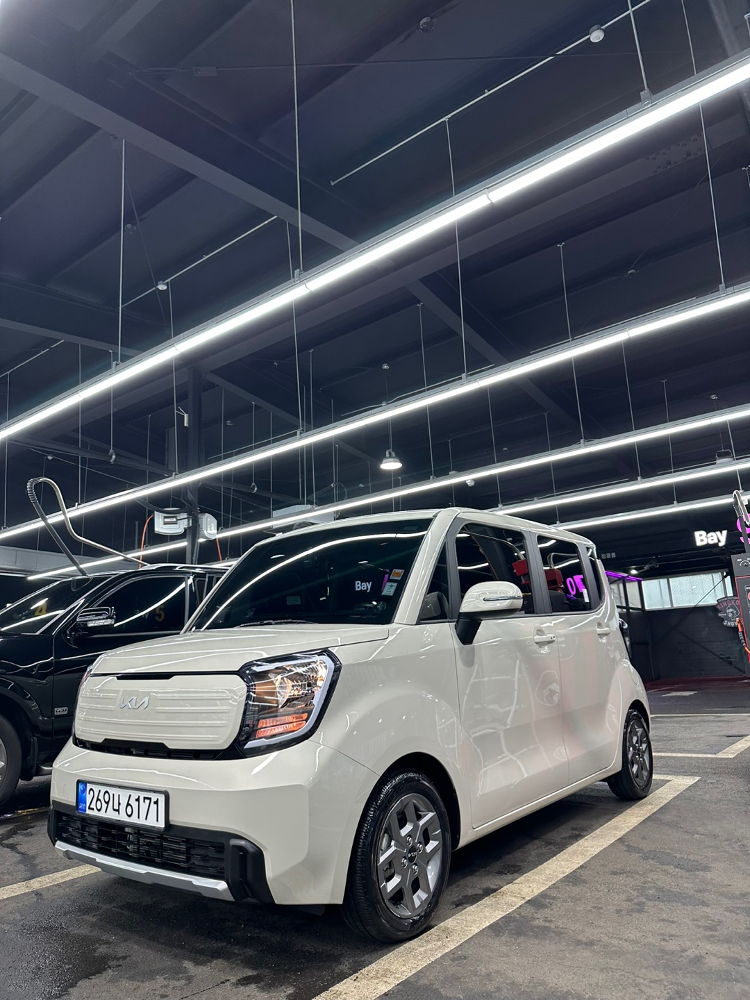

세차장은 고객들에게 전문적인 세차 서비스를 제공합니다. 우리 세차장은 고품질의 세차를 위해 최신 기술과 장비를 사용합니다. 고객의 차량을 깨끗하게 세차해드리고, 탁월한 서비스로 만족감을 드립니다.

서비스 가격
다양한 세차 서비스를 제공하며 가격은 다음과 같습니다:
BASIC WASH 스팀 세차 내,외부 카 케어
오염도에 따라 옵션 및 추가 비용이 발생 할수 있습니다.
저희는 차량 내/외장관리 전문가로서 오너의 품격을 올리기 위해 노력합니다.
고객님의 니즈를 충족시켜드리기 위해 차량 컨디션에 맞는 진단과 신중하게 디테일링 합니다.
차량 내 귀중품 꼭 확인하셔서 챙겨주세요!
유막이란 유리면에 점착된 유분기 있는 오염막으로, 이를 제거하여 깨끗한 시야를 확보할 수 있으며 그 위에 발수 코팅을 하여 생긴 뛰어난 발수력으로 우천 시 차량 유리 위의 물방울들이 쉽게 날아가도록 도와줍니다.
*시속 60KM 이상으로 주행하면 물방울들이 와이퍼 작동 없이 날아가는 모습을 확인하실 수 있습니다.
당일 취소는 불가능 합니다.
노쇼 발생시 다음 예약 불가능 하신 점 참고 바랍니다.
싱글과 듀얼 광택기를 사용한 3 Step 폴리싱으로, 차량 전체적인 스크래치 제거와 수성 컴파운드 약재를 사용하여 광을 최대한으로 올리며 최소한의 연마로 최상의 퀄리티를 제공합니다.
* 광택 소요 시간 1 ~ 2일 (차량 상태에 따라 3일 정도 소요 될 수 있습니다.)
기본 실외 세차- 실내 먼지 제거 및 1차 습식 청소- 토네이도건 실내 전체 인테리어 클리너 도포- 디테일링 브러슁 틈새 및 트림 오염물 반복제거- 2차 습식 청소- 향균탈취- 유리 세정- 3차 습식 청소- 가죽보습 및 플라스틱 트림 보호제 보습(알칸타라 제품은 알칸트라 전용제품 케어)